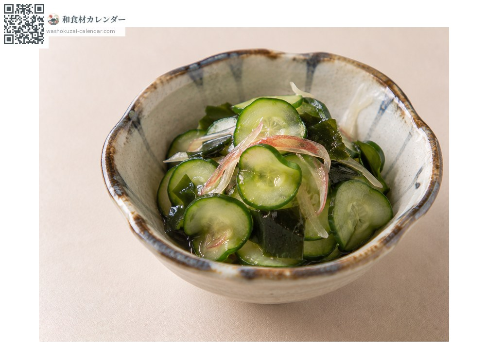
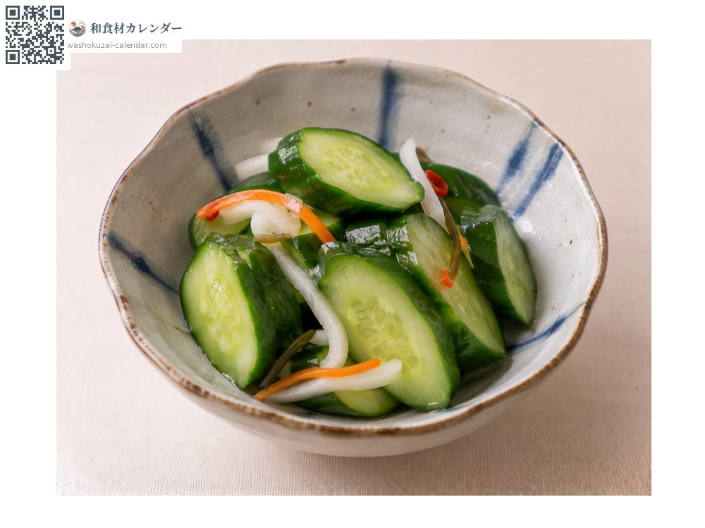
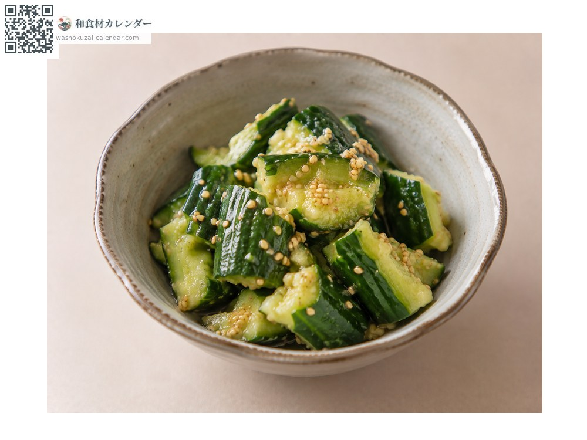
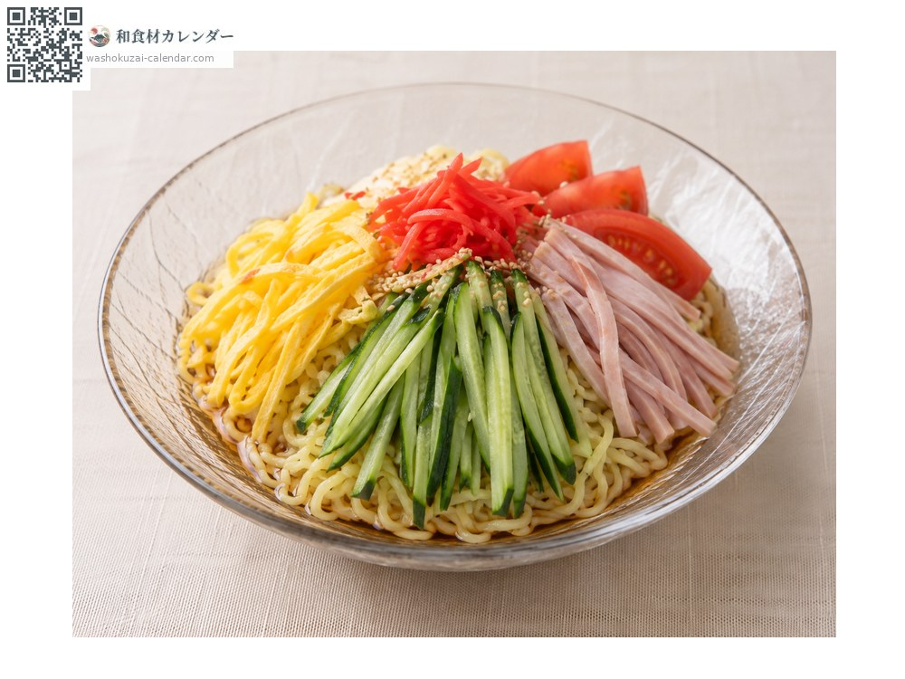

Vegetables
Cucumber
キュウリ きゅうり
At its best in Jun, Jul, Aug

When it is at its best
Jan
Feb
Mar
Apr
May
Jun
Jul
Aug
Sep
Oct
Nov
Dec
In seasonAvailable
How to cook

Sunomono (vinegared dish)
Dressed with wakame or octopus.

Asazuke (lightly salted quick pickles)
Rubbed with salt.

Smashed cucumber with sesame oil
Smashed so the dressing soaks in.

Hiyashi chuka (chilled noodles)
Cut into fine strips.
How to choose
Sharp bumps on the surface and an even thickness. It should feel hard and taut.
Storage
Pat dry, bag, and refrigerate standing upright. Sensitive to cold, so do not over-chill.
Main areas
Good to know
About 95% water. Valued in summer as a food that cools the body.